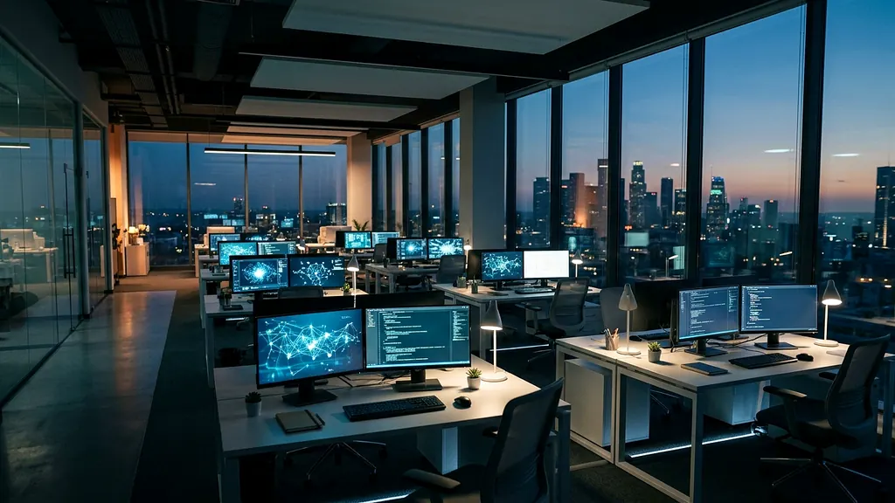
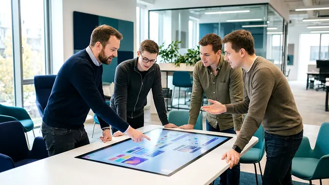
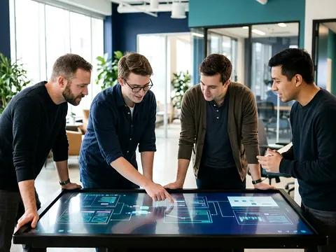

رسالتنا
تقديم حلول برمجية موثوقة وسهلة الاستخدام، تجعل الخدمات اليومية أسرع وأقرب للجميع، بمن فيهم ذوو الإعاقة.

بدأنا عام 2011 بفكرة بسيطة: التقنية الجيدة هي التي تحل مشكلة حقيقية عند الناس.
تأسست Smart Land عام 2011، وكانت أعمالها الأولى مواقع وأنظمة إدارة لشركات محلية. مع الوقت توسع الفريق ودخل مجالات جديدة، فطوّر أنظمة لإدارة المشافي ومنصة للتعلم عن بعد وتطبيقات للتسوق والإعلانات.
في السنوات الأخيرة صار الذكاء الاصطناعي جزءاً من أغلب منتجاتنا، وأوضح مثال عليه تطبيق Smart Signal الذي يترجم لغة الإشارة.

تقديم حلول برمجية موثوقة وسهلة الاستخدام، تجعل الخدمات اليومية أسرع وأقرب للجميع، بمن فيهم ذوو الإعاقة.
أن نكون من الشركات التقنية الرائدة في المنطقة في استخدام الذكاء الاصطناعي لخدمة الإنسان.
الشفافية مع العميل، الجودة قبل السرعة، والتعلم المستمر داخل الفريق.
يضم الفريق مطوري ويب وموبايل، ومهندسي ذكاء اصطناعي، ومصممي واجهات، ومختصين في الاختبار والدعم الفني. كل مشروع له فريق صغير يتابعه من البداية للنهاية.
